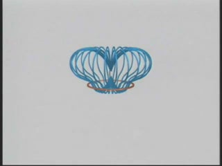
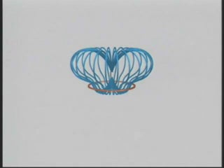

SUBJECT: The Levitating Magnet
DESCRIPTION: Here we show an example of Faraday's Law, as a magnet is dropped through a conducting ring. As the magnet falls under gravity, a current is induced in the ring that tries to keep the magnetic flux through the area of the ring constant. This corresponds to a field that produces a force that opposes the motion of the magnet: as it approaches from above, the induced current generates a field that pushes the magnet upwards. Once it falls through the ring, the direction of the current changes to produce a field that tries to pull the magnet upwards. In this case, since the ring has zero resistance, the flux through it remains constant. This is evidenced by the fact that the fieldlines from the magnet never cross the ring. In addition, the magnet is light enough that the force from the induced field balances that of gravity, causing it to float above the ring.
The first animation shows the magnetic field configuration around a magnet as it falls and rebounds. The current in the ring is indicated by the small moving spheres. The motions of the field lines are in the direction of the local Poynting flux vector.
The second animation shows a three-dimensional fieldline representation of the same thing.
VISUALIZATIONS: 2D (MPG - 4 MB); 3D (WMV - 1.1 MB)